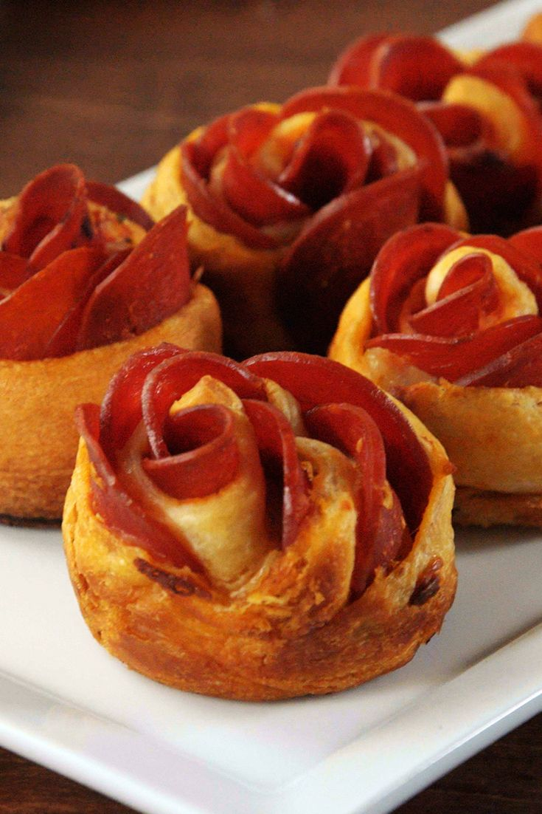

Balsamic Glazed Chicken

Description
Perfect for a cheat Valentine's Day meal... NOT THAT TYPE OF CHEAT :O
Ingredients
- 1 8oz tube of crescent dough
- 1/4 cup pizza sauce
- 1 cup shredded mozarella
- 1/2 cup freshly grated parmesan
- 1 cup pepperoni slices
- 1 tsp italian seasoning
Steps
-
Preheat oven to 375° and spray a muffin tin with cooking spray.
-
On a lightly floured surface, unroll crescent dough and separate into 4 rectangles. If the dough has perforated edges, pinch together to seal.
-
Using a pizza cutter, cut each rectangle of dough lengthwise into three 1”-wide strips. Spread a very thin layer of sauce onto each strip. Sprinkle with cheeses, then layer pepperoni on top half of each strip so that they’re slightly overlapping and the top halves of the pepperoni slices are off the pastry. Fold up bottom half of dough and tightly roll.
-
Transfer to prepared muffin tin and bake until golden, 15-20 minutes.
-
Serve warm.